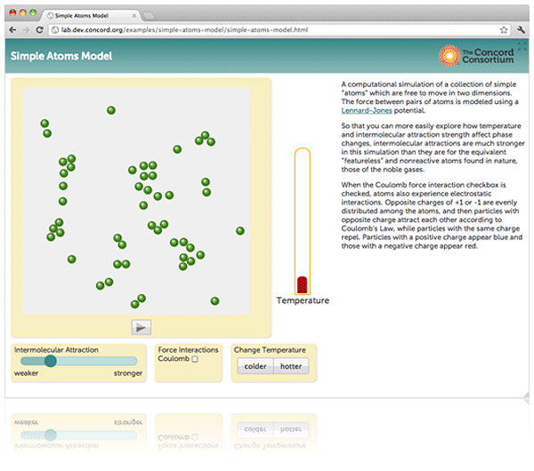

Upgrade your browser to use our award-winning molecular simulations anytime, anywhere.

Sorry
You'll have to upgrade your web browser to use this HTML5-based model.
Minimum Desktop Browser Requirements
Minimum Tablet Requirements
- iPad 2 or newer running iOS 5.0 or above
- Android tablet running Android 4.0 or above
Other Mobile Devices
While these models and visualizations may function on smaller mobile devices such as a cell phone, we do not recommend using one to view them.
What Is MW?
MW is powerful software that provides visual, interactive computational experiments for teaching and learning science. Over the past decade, we've developed our Classic MW into one of the most amazing tools for science teaching and learning.
Now in the Browser
We think MW deserves to thrive. To reach as many learners as humanly possible. On pocket devices or computers, whatever's available. So we're building the next-generation MW to capture the amazing power and flexibility of modern Web browsers.
Learn More
Plenty of exciting developments are still to come on this page. We're videotaping a behind-the-scenes tour of what's happening. So follow our blog, tweets, and posts, and subscribe to learn more. And, developers, check us out on Github.